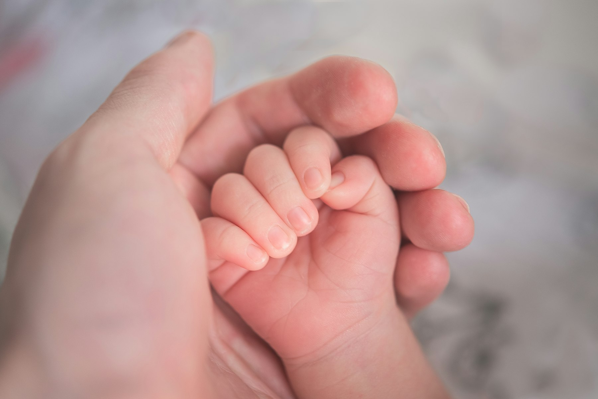
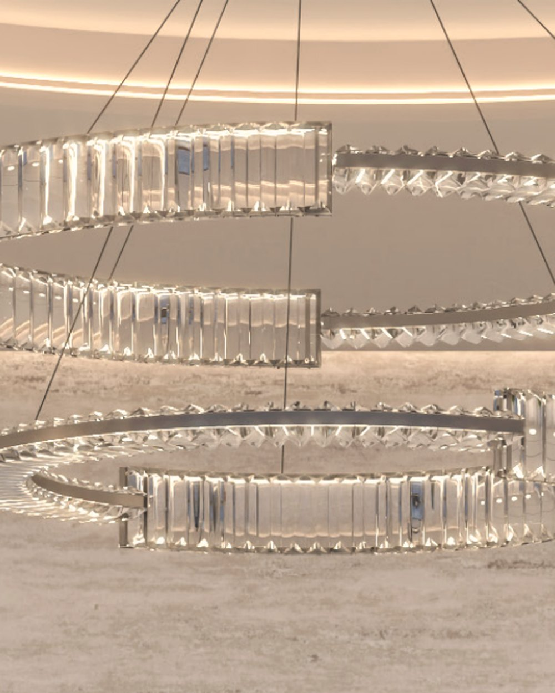
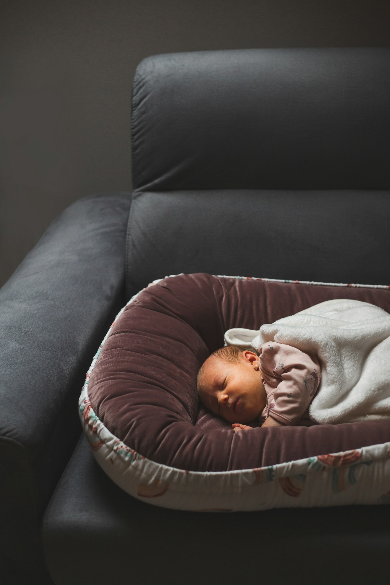
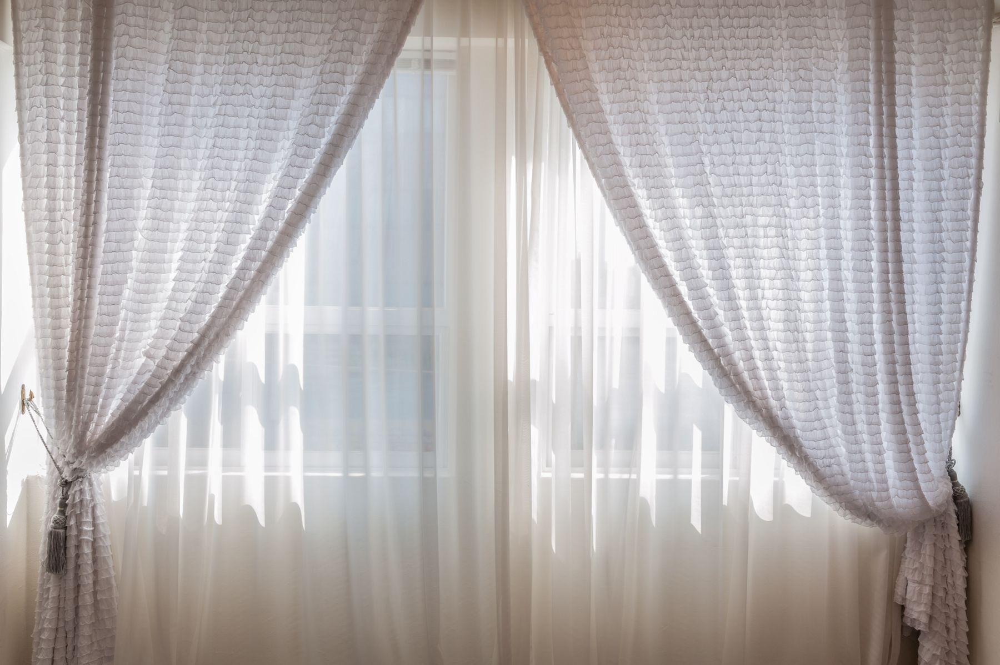

Exceptional care, delivered gently.
Thirty years ago, one surgeon set out to prove a single idea: that this could be virtually painless, virtually bloodless, and genuinely gentle.
Well over 200,000 families later, that idea has come home to Dubai.
Gentle newborn circumcision, and you beside him the whole time.
A calm, unhurried home for your son's care in Dubai, in the hands of people who do this every day.
Our first international clinic, thirty years and well over 200,000 families in the making.
Licensed to its highest day-surgery standard, and designed so you would never know it.
The peer-reviewed gentle technique, trusted by families around the world.
Clear aftercare and a direct line to our team. A human answers, quickly in the day and kindly always.
You don't have to wonder how the day will feel.
We'll walk you through every moment of it, from the message you send tonight to the drive home with your son asleep in the back.


Six minutes, from our family to yours.
What the day actually holds
You stay close.
Your son is most at peace when you are near, so you hold him, skin to skin, throughout.
Read about staying closeComfort comes first, always.
The gentle anaesthetic is given its full time to take effect. Nothing is rushed for our convenience.
Read about comfort and pain reliefThe moment itself is brief.The calm around it is everything.
Read what the day looks likeYou are never left guessing.
Clear aftercare you can actually follow at 3am, and a direct line to our team. A human answers, quickly in the day and kindly always.
Read about the first days at homeA cherished moment, treated as one.
For many of our families this is a meaningful rite, rich with faith and love. It deserves to be held that way, and it is.
Read moreThe first international clinic of The Pollock Group.
Licensed by the Dubai Health Authority to its highest day-surgery standard, and designed so you would never know it.
The peer-reviewed gentle technique, trusted by families on four continents.
In the care of an internationally trained Consultant Neonatal and Paediatric Surgeon, personally certified in the Pollock Technique by Dr. Pollock himself.

“The night before, every parent asks the same quiet question: am I placing my son in the right hands? This is our answer.”